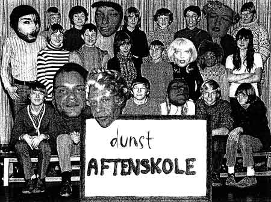
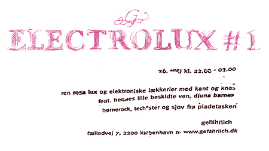

| dunst | Nyhedsbrev |
| København - 25. Maj 2005 | |
| dunst aftenskole | Hver uge |
 Læs mere |
|
| dunst recommends this event: | 26. Maj 2005 |
 |
|
| dunst musik | Fredag 27. Maj 2005 |
 Programmet "Brunch" på TV2-Lorry, inviterer Dennis Agerblad, Miss Fish & Hairwerk i studiet for at høre lidt om dunst-CD'en odéur. Programmet sendes 10:50 fredag morgen. |
|
| Læs om/ Hør brudstykker fra dunst-CD'en odéur her | |
| dunst RECOMMENDS this event | 27. + 28. Maj 2005 | |
| The
young, the older and the really old Cabaret med: Ramona Macho, Sandra Day, Tusnelda Tusindfryd, Lille Knudsen, |
Café Intime Allégade 25a, Frederiksberg kl. 22 |
|
| Reserve a seat by carling 38 34 19 58 | ||
| digt af Hairwerk |
| Bim bam busse. Det værste er når Intelektet ved hvorfor man ikke kan få kontakt med sjælens spejl,,, så sidder man med Paradoxet som Madding for Sykosen,, indtil den til sidst bider på og man for alvor knækker filmen. |
| Tis |
| Der sker ret meget i vores dunst-kalender. |
Hvis du vil leve et kedeligt liv uden dunst så afmeld dunst Nyhedsbrev på forsiden af www.dunst.dk